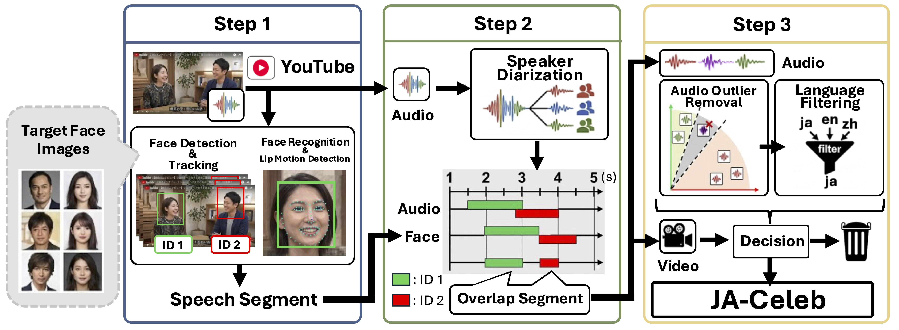
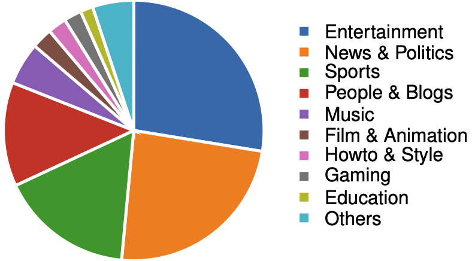
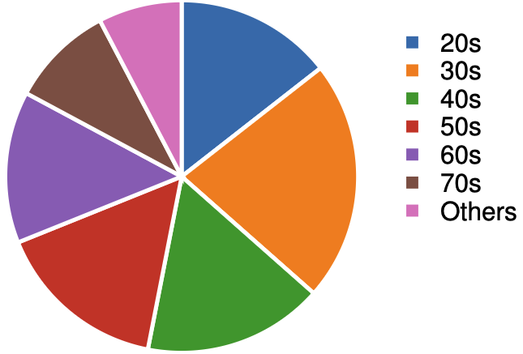

Key Contributions
- First Large-scale Japanese AVSV Dataset: Introduction of JA-Celeb, containing 3,625 identities, 388.08 hours of recordings, and 259,381 audio-visual segments.
- Automatic Collection Pipeline: A robust 3-stage pipeline combining mouth-motion detection, speaker diarization, and outlier filtering to ensure identity consistency without manual annotation.
- Domain Gap Analysis: Experimental demonstration that models trained on English-centric datasets suffer significant performance degradation in Japanese recording environments.
Abstract
This paper presents JA-Celeb, a Japanese audio-visual speaker verification dataset. To avoid manual annotation in training-data construction, we develop an automatic pipeline that extracts candidate speaking segments from facial landmarks and refines them using speaker diarization. Experimental results show that models trained on existing audio-visual speaker verification datasets collected mainly from English-speaking environments suffer performance degradation on Japanese AVSV evaluation sets, suggesting a domain mismatch that may stem from differences in language, speaker demographics, and recording conditions. In contrast, a model trained on the proposed dataset achieves a lower equal error rate (EER) under Japanese AVSV conditions compared with a model trained on VoxCeleb. These results demonstrate that JA-Celeb serves as both an effective training resource and a benchmark for evaluating model performance in diverse Japanese recording environments.
Automatic Data Collection Pipeline

We propose an automatic pipeline to ensure audio-visual identity consistency:
- Step 1: Visual Candidate Extraction: Detects faces and tracklets, then uses mouth aspect ratios to identify candidate speaking segments and assigns visual identities via face recognition.
- Step 2: Audio-Based Identity Refinement: Uses Sortformer for speaker diarization. Segments are discarded if the dominant diarization cluster does not match the visually assigned identity.
- Step 3: Final Outlier Filtering: Removes non-target speakers using ECAPA-TDNN speaker embeddings and filters out non-Japanese speech using Whisper-based language identification.
Dataset Statistics & Diversity

16 Genres: Covers a wide range of content including News, Entertainment, and Education from 18,605 YouTube channels.

Age Diversity: Includes speakers from a broad range of age groups to ensure biometric robustness.
JA-Celeb is specifically designed to reflect "in-the-wild" conditions, featuring a high proportion of short utterances (52.6% are under 3 seconds), which poses a realistic challenge for speaker verification models.
Experimental Results
Our cross-dataset evaluations reveal that models trained on VoxCeleb2 (approx. 2,442 hours) show limited generalization to the Japanese domain. In contrast, a model trained on JA-Celeb (approx. 388 hours) achieves superior performance on Japanese evaluation sets:
| Training Dataset | Test Set | Visual EER (%) | Audio EER (%) | Audio-Visual EER (%) |
|---|---|---|---|---|
| VoxCeleb2 | JA-Celeb-E | 5.617 | 9.784 | 3.609 |
| JA-Celeb (Ours) | JA-Celeb-E | 3.217 | 12.146 | 1.732 |
Furthermore, JA-Celeb demonstrates significant robustness in short-utterance conditions, reducing performance degradation compared to models trained on existing English-centric resources.
BibTeX
@inproceedings{Tsuzuki2026JACeleb,
title={JA-Celeb: An In-the-Wild Japanese Audio-Visual Speaker Verification Dataset},
author={Tsuzuki, Yuto and Nakajima, Miya and Kato, Tsuyoshi},
booktitle={2026 Asia Pacific Signal and Information Processing Association Annual Summit and Conference (APSIPA ASC)},
year={2026},
url={https://your-domain.com/your-project-page}
}Acknowledgements
This work was supported by JSPS KAKENHI Grant Number JP25KJ0708.